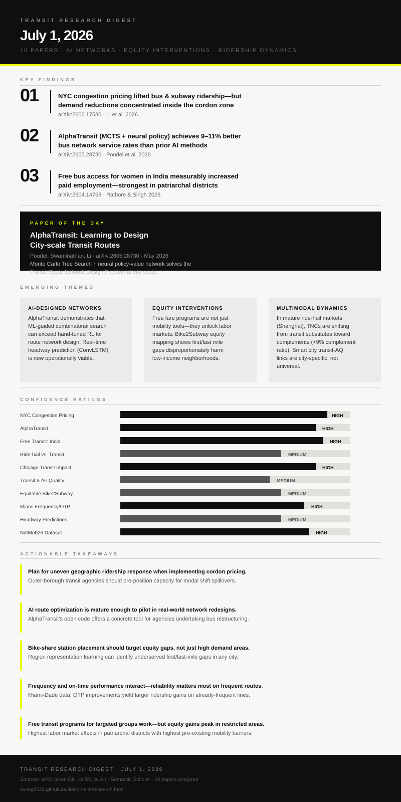

A city-scale bus route network design board with AI decision tree overlays and service coverage heatmap
Gemini Imagen API quota exceeded on this key — image generation skipped Subject: A city-scale bus route network design board with AI decision tree overlays and service coverage heatmap
Executive Summary
Today's ten-paper digest reveals a field undergoing a quiet but fundamental transformation: transit research is moving from descriptive to prescriptive, and from one-size-fits-all to context-aware. The most striking signal is methodological—AlphaTransit shows that Monte Carlo Tree Search guided by a neural policy-value network can solve the Transit Route Network Design Problem at city scale, outperforming reinforcement learning alone by 9–11 percentage points in service coverage. Paired with a separate ConvLSTM approach for real-time headway prediction, AI is entering transit operations at two complementary levels: network design and dispatch control. The policy side is equally rich: NYC's first cordon congestion pricing program, now 18 months old, is yielding real evaluable data showing transit ridership gains alongside spatially uneven demand reductions—and a new framework for evaluating such policies without clean control groups. On the equity frontier, a quasi-natural experiment from five Indian states demonstrates that free bus access for women directly increases paid workforce participation, with the largest effects in the most patriarchal districts—a striking finding that reframes free-fare programs as labor market interventions, not just mobility subsidies. The Chicago simulation quantifying transit's $35.4B annual economic value (13:1 return on a $2.7B public investment) puts a price tag on absence that policymakers can actually use. And in Shanghai, a maturing ride-hail market has begun to complement rather than substitute for transit—a pattern that will recur in every major city within a decade.
AI moves from analysis to design
Two papers this week show AI crossing from transit analysis into transit design itself: AlphaTransit for bus network route generation and ConvLSTM for real-time headway dispatch control. These are not research demos—both are tested on real city-scale benchmarks and beat or match human-engineered alternatives.
Transit as an economic intervention, not just mobility
The India free-fare study and the Chicago economic modeling both reframe transit not as a social service with a ridership metric, but as an economic multiplier measurable in employment rates and GDP-equivalent opportunity costs. This framing is more compelling to fiscal committees than ridership counts alone.
City context dominates cross-city generalizations
Three papers—the NYC congestion pricing spatial heterogeneity finding, the multi-city transit-PM2.5 work showing non-uniform relationships, and the Miami OTP-frequency interaction varying by time of day—all converge on the same warning: aggregate averages mask the city-specific and neighborhood-specific dynamics that actually drive transit outcomes.
AlphaTransit: Learning to Design City-scale Transit Routes
Bus network design is one of the hardest combinatorial optimization problems in urban planning—the space of possible route sets is astronomical, and today most agencies rely on consultant heuristics or incremental patch decisions. AlphaTransit offers a principled, learnable approach that directly targets service coverage.
- Frames route design as a sequential decision problem where each step selects a route extension, with delayed feedback making it a challenging planning problem.
- The policy network suggests route extensions; the value network evaluates future network quality, enabling efficient lookahead without expensive simulation rollouts.
- On Bloomington benchmark: 54.6% service rate (mixed demand) and 82.1% (full demand)—9.9% and 11.4% improvements over RL without search.
- Code and data are publicly available, making this immediately reusable by agencies and planners.
- Demonstrates that learned guidance and MCTS are complements, not substitutes—each alone underperforms the combination.
Monte Carlo Tree Search guided by a neural policy-value network trained via a combination of behavioral cloning from known-good solutions and self-play. Evaluated on the Bloomington, Indiana TRNDP benchmark under mixed and full demand scenarios.
AlphaTransit achieves 54.6% (mixed) and 82.1% (full demand) service rates, outperforming reinforcement learning without search by 9.9% and 11.4%, and MCTS without learned guidance by 2.5% and 11.2%.
Validated on one benchmark city (Bloomington); generalization to larger, more complex real-world networks has not yet been demonstrated. The approach requires training data from existing route solutions, which may not exist in transit deserts.
Transit agencies planning bus network restructurings can use AlphaTransit as an optimization engine to generate candidate network designs, replacing or augmenting expensive consultant-led route studies. Best applied to full network redesigns rather than incremental route patches.
Transit agency planners, operations researchers, transportation planning consultants, municipal governments undertaking bus network restructurings.
Prior approaches to TRNDP used metaheuristics (genetic algorithms, simulated annealing) or recent RL methods. AlphaTransit is the first to combine MCTS with learned guidance for this specific problem, drawing from the success of AlphaGo-style search in games and extending it to infrastructure planning.
Public transit gains and spatially uneven travel demand changes after NYC congestion pricing
This is one of the first rigorous post-implementation evaluations of NYC's January 2025 congestion pricing program using time-series foundation models. Congestion pricing is the most consequential urban transport policy live in the US, and real evaluation data are only now becoming available.
- Time-series foundation models can construct credible counterfactual forecasts for large-scale policy changes even without traditional control groups.
- Bus and subway ridership increased significantly relative to expected no-policy baseline post-January 2025.
- Overall travel demand decreased modestly—pricing suppressed some trips entirely rather than shifting all car trips to transit.
- Effects are spatially heterogeneous: demand reductions concentrated within the cordon zone; transit gains extended beyond Manhattan's core.
- Sociodemographic analysis reveals uneven adaptation across neighborhoods—equity implications vary by community type.
Quasi-experimental evaluation using time-series foundation models to generate probabilistic counterfactual demand forecasts for bus, subway, and aggregate trip volume. Applies the framework to system-wide urban mobility data covering pre- and post-January 2025 periods.
Post-policy transit ridership increased relative to expected no-policy demand. Overall travel demand decreased modestly. Effects distributed unevenly across NYC geography and sociodemographic groups.
Short post-period (18 months at most). Foundation-model counterfactuals are a relatively new technique without extensive external validation in transportation policy contexts. Single-city, single-program natural experiment limits generalizability.
Cities considering congestion pricing should not assume uniform transit ridership gains—complementary service investments in outer neighborhoods may be needed to capture the full mobility benefit. Equity monitoring should focus on adaptation speed across income groups.
Urban transportation planners, transit agency executives, policy analysts in cities considering congestion pricing, transportation economists.
Extends congestion pricing evaluation literature (London, Stockholm, Singapore) with a novel methodological approach adapted to US data scarcity. Notably, earlier NYC-specific analyses used traditional difference-in-differences approaches; this paper introduces foundation models for causal inference in transport.
Ticket to ride: Impact of free public transport on women's workforce participation in India
Free-fare programs for women are spreading rapidly across South Asia and beyond. This paper is one of the first to provide quasi-experimental evidence that such programs work as labor market interventions, not just mobility subsidies—a reframing that could reshape the cost-benefit calculus for policymakers.
- Uses a quasi-natural experiment from free bus schemes in Punjab, Tamil Nadu, and three other Indian states.
- Triple-difference estimation and event study framework confirm the effects are not pre-existing trends.
- Early adopters (Punjab and Tamil Nadu) show concentrated effects, reflecting both institutional readiness and baseline mobility constraint levels.
- Disproportionately large effects in patriarchal districts with highest pre-existing mobility restrictions—the program targets exactly those who benefit most.
- Mechanism: easing non-financial binding constraints (social permission, safety concerns) rather than purely reducing ticket costs.
Triple-difference regression using two rounds of India's representative Time Use Survey, leveraging variation across states, time periods, and individual demographics. Complemented by event study design to test for pre-trends and effect timing.
Free bus schemes measurably increased women's paid work participation rates and duration of employment. Effects strongest in early-adopting states and in districts with highest patriarchal constraints on female mobility.
Limited to five states with available Time Use Survey data across two rounds. Mechanism (non-financial vs. financial constraint easing) is inferred rather than directly measured. Program rollout timing and quality varied across states.
Policymakers evaluating free-fare programs should measure labor market outcomes alongside ridership—particularly women's employment rates. Programs should be targeted where mobility constraints are highest, not simply where transit density is highest.
Transit equity advocates, development economists, gender policy researchers, transport ministries in South and Southeast Asia, World Bank transport division.
Prior free-fare literature focused on ridership, environmental impacts, and general mobility. This paper is novel in documenting labor market effects via quasi-experimental design rather than surveys or theory.
Impact of Transit on Mobility, Equity, and Economy in the Chicago Metropolitan Region
Transit funding debates are perpetually hampered by the difficulty of quantifying the counterfactual: what happens if transit disappears? This paper provides one of the most detailed answers ever attempted, using agent-based simulation at metro scale to price transit's absence in terms legislators and budget committees can act on.
- Regional travel times increase 14.2% and intra-city Chicago travel times increase 34.7% if transit is eliminated.
- 11.8% of non-work activities are cancelled regionally; 26.9% within the City of Chicago.
- Economic cost of elimination: $35.4B annually—a 13:1 benefit ratio on $2.7B public transit funding.
- Equity burden is sharply skewed: the lowest income quartile would bear nearly half of all cancelled non-work activities.
- Women face disproportionate cancellation burdens, reinforcing the equity findings from the India paper above.
Full-region agent-based travel demand simulation using the POLARIS framework, modeling all Chicago metropolitan residents and their activity chains with and without transit service to derive counterfactual outcomes.
Transit elimination would cost Chicago $35.4B annually, increase regional average travel time 14.2%, and force cancellation of 11.8% of non-work activities. Low-income residents and women bear disproportionate burdens.
Extreme counterfactual (complete elimination) rather than partial scenarios; partial service cuts may have nonlinear effects not captured here. Agent behavioral responses (e.g., relocation, car purchase) are constrained by simulation assumptions.
The 13:1 return ratio is a powerful budget-advocacy tool. Agencies facing funding cuts should commission similar studies for their regions; the methodology is publicly described and replicable with POLARIS or comparable ABM frameworks.
Transit agency executives, city budget offices, state legislatures, metropolitan planning organizations, equity advocates.
Advances beyond earlier transit economic impact studies (which typically use multiplier-based input-output analysis) by directly simulating behavioral responses at the individual trip level, capturing cancellation effects that multiplier studies miss.
Substitution or Complement? Uncovering the Interplay between Ride-hailing Services and Public Transit
The question of whether ride-hailing helps or hurts transit has been debated since Uber's founding. This paper provides large-scale empirical evidence from one of the world's most mature TNC markets that the relationship is shifting—with significant implications for how transit agencies and regulators should frame ride-hailing partnerships.
- Classifies each ride-hail trip into one of four categories: first-mile complementary, last-mile complementary, substitutive, and independent of transit.
- Complementary ratio increased 9.22% and substitutive ratio decreased 9.06% compared to earlier Shanghai studies—suggesting market maturation favors integration over competition.
- Distance to metro stations and bus stop density show nonlinear effects (via CatBoost + SHAP analysis)—neither proximity nor distance is uniformly good or bad for complementarity.
- Results from a saturated market (Shanghai) may differ from less-mature TNC markets.
September 2022 GPS data from 96,716 ride-hail vehicles in Shanghai. CatBoost (gradient boosting) with SHAP (Shapley additive explanations) values to identify nonlinear effects of proximity, land use, and network characteristics on TNC-transit relationship classification.
Complementary TNC-transit trips now outnumber substitutive ones and growing; nonlinear proximity effects suggest optimal first/last-mile "sweet spot" distances for TNC-transit integration.
Single city (Shanghai), single month (September 2022). Shanghai's transit density is far higher than most US/European cities; transferability to lower-density contexts requires caution. Classification relies on geographic proximity rather than traveler-stated intent.
Transit agencies considering TNC integration programs should expect complementary effects to grow as TNC markets mature. Optimal first/last-mile partnership zones exist at specific distance bands from stations—these can be estimated from local GPS data before committing to subsidy programs.
Transit agency partnerships teams, Uber/Lyft policy teams, transportation planners designing mobility-as-a-service integration, urban researchers.
Earlier US studies found primarily substitutive TNC-transit relationships; this paper's Shanghai data suggests temporal and market-maturity dynamics that prior cross-sectional studies couldn't detect.
Critical Transit Infrastructure in Smart Cities and Urban Air Quality: A Multi-City Seasonal Comparison of Ridership and PM2.5
Smart-city advocates often assume transit ridership improvements will automatically reduce urban air pollution. This paper provides multi-city empirical evidence that the relationship is far more complex, city-specific, and seasonally dependent—a useful corrective to oversimplified policy narratives.
- Dataset integrates two heterogeneous data streams (transit ridership and PM2.5) across four structurally different cities.
- Cities show "pronounced structural differences in transit scale and intensity"—NYC vs. Phoenix represent opposite ends of a transit-density spectrum.
- Seasonal shifts in both ridership and PM2.5 are consistent within cities but differ dramatically between them.
- Apparent mobility-PM2.5 correlations break down when cities are pooled—a warning against cross-city generalizations in smart-city benchmarks.
Multi-source dataset construction combining agency-reported ridership (presumably GTFS/NTD) with EPA ambient PM2.5 monitoring data. Comparative analysis across March and October 2024 in four US metro areas.
No uniform transit-AQ relationship found. Each city shows city-specific seasonal patterns. The work positions multi-source integrated monitoring as a scalable smart-city capability but cautions against pooled modeling.
Descriptive/correlational analysis; does not establish causal pathways from transit to PM2.5. PM2.5 is influenced by industrial, weather, and wildfire factors not controlled in this analysis. Two months of data limits seasonal inference.
Cities claiming air-quality co-benefits of transit investment should collect their own city-specific data rather than relying on cross-city benchmarks. Integrated transit-environment monitoring dashboards are technically feasible and should become a standard smart-city data product.
Smart-city data officers, environmental health researchers, transit agency sustainability teams, EPA regional offices, air quality monitoring networks.
Builds on prior single-city transit-environment studies by constructing a comparable multi-city dataset, but the key contribution is the warning against cross-city generalization that prior pooled analyses may have obscured.
Transit for All: Mapping Equitable Bike2Subway Connection using Region Representation Learning
The first/last-mile problem is the dominant barrier to subway access for non-car-owning low-income residents. Bike-sharing is affordable and scalable, but station placement decisions typically optimize for ridership—this paper proposes an equity-weighted placement framework instead.
- Proposes a three-component framework: demand prediction → equity assessment (weighted PTAL) → station placement optimization.
- Uses region representation learning to encode spatial context from multiple geospatial data layers rather than relying on single-mode features.
- Introduces weighted Public Transport Accessibility Level (wPTAL) combining demand forecasts with equity weights for income and demographic factors.
- NYC case study identifies specific transit accessibility gaps disproportionately impacting low-income and minority neighborhoods.
- Strategic equity-weighted placement significantly reduces measured accessibility disparities.
Region representation learning combining multimodal geospatial inputs (OSM, demographics, land use, transit network) to predict bike-share demand at new station locations; integrated with a weighted accessibility metric to identify placement priorities.
NYC analysis identifies specific underserved neighborhoods where new stations would maximally reduce equity gaps. Equity-weighted placement outperforms pure demand-maximizing placement on accessibility equity metrics.
Demand model trained on existing station data—predictions for areas with no current bike-share data are extrapolated rather than directly observed. Social acceptance of bike-share in car-dependent or senior-heavy neighborhoods not modeled.
Bike-share operators and city transportation departments can apply this framework to prioritize equity-focused station siting rather than defaulting to high-demand commercial zones. The wPTAL metric can be adopted as a standard equity accountability tool for micromobility programs.
Bike-share operators, city DOTs, transit equity advocates, MPOs conducting Title VI analysis, urban geography researchers.
Extends prior accessibility-based bike-share planning by adding both a learned demand model (replacing simple gravity models) and an explicit equity weighting mechanism that prior placement frameworks lacked.
Analyzing the Impact of Service Frequency and On-time Performance on Transit Ridership in Miami-Dade County
Transit agencies face constant budget tradeoffs between adding service (frequency) and improving quality (reliability). This paper provides one of the first empirical estimates of how these two interventions interact—a result directly actionable in service planning decisions.
- Ridership declined steadily pre-COVID, dropped sharply during pandemic, and recovered to pre-pandemic levels by late 2022—providing a natural experiment period.
- Frequency consistently influences ridership across all periods.
- On-time performance became significantly more important post-pandemic, suggesting rider tolerance for unreliability may have decreased.
- Key interaction: "improving reliability is particularly effective on frequent routes"—agencies shouldn't invest in OTP on infrequent routes as first priority.
- Time-of-day matters: OTP strategies should focus on morning peak; frequency strategies should target midday and evening.
Two-way fixed effects panel regression using automated passenger count data and real-time GTFS feed schedules for Miami-Dade County bus routes. Comparison across pre-COVID (2018–2019) and recovery (2021–2023) periods to identify period-specific dynamics.
Frequency and OTP independently boost ridership; their interaction is significant in the recovery period. Morning OTP and midday/evening frequency are the highest-leverage service improvement strategies.
Single system (Miami-Dade), which has specific demographic and land-use characteristics (car-dependent, dispersed, warm weather) that may not generalize. COVID recovery dynamics may be atypical.
Budget-constrained agencies should prioritize OTP improvements on frequent routes and frequency increases on off-peak services, rather than uniform investment across all routes. Morning OTP is a particularly high-value target for peak ridership recovery.
Transit operations staff, service planning departments, budget analysts at transit agencies, state transit oversight offices.
Prior ridership-service-quality studies typically treat frequency and OTP separately; this paper's interaction finding is a meaningful advance. The COVID-recovery period also provides a novel context for studying ridership-service relationships.
Real Time Headway Predictions in Urban Rail Systems and Implications for Service Control: A Deep Learning Approach
Bus bunching and train headway irregularities are among the most visible and frustrating rider experiences, yet dispatchers currently make control decisions without reliable tools to predict how their interventions will propagate downstream. This paper closes that gap for rail.
- ConvLSTM captures both temporal evolution and spatial propagation of headway irregularities simultaneously—previous approaches handled these dimensions separately.
- Planned terminal headways are incorporated as a key input, making the model aware of dispatcher intent as well as historical patterns.
- The model can simulate the downstream effects of different dispatcher strategies (holding, skipping stops, short-turning) before committing.
- Validated on large-scale real metro system data.
- Computationally efficient enough for real-time deployment without GPU-intensive simulation rollouts.
Convolutional Long Short-Term Memory (ConvLSTM) neural network trained on historical headway data from a large metro system. Inputs include planned terminal headways and historical headway patterns; output is predicted headway evolution across the entire line over a planning horizon.
ConvLSTM outperforms simpler LSTM and statistical baselines in headway prediction accuracy. The framework provides actionable insights for real-time dispatching decisions across a full metro line.
Validated on a single metro system; headway dynamics vary significantly across rail systems with different signal architectures, stopping patterns, and ridership distributions. Real-time integration with operations control center systems is not described.
Rail operators can deploy this as a decision support tool in operations control centers—entering a proposed holding or short-turning decision and seeing its predicted downstream headway effects before execution. Particularly valuable for handling disruptions.
Rail operations control center managers, transit technologists, signal and control system engineers, transit data scientists.
Prior headway prediction models used simpler LSTM or regression approaches that treated each station independently; ConvLSTM's simultaneous spatial-temporal modeling is a meaningful architectural advance for the specific geometry of rail lines.
The NetMob26 Dataset: A High-Resolution Multi-Source View of Public Bus Mobility in Niterói
High-resolution, multi-source public transit datasets from the Global South are rare. This dataset enables a new generation of transit research on a Brazilian mid-size city (population ~500K, across the bay from Rio de Janeiro) that would otherwise be understudied.
- Combines four heterogeneous data streams: GPS telemetry, ticketing records (~7.2M records), route/stop data, and sociodemographic layers.
- Processed through cleaning and anonymization to protect passenger privacy while maintaining research utility.
- Enables investigation of public transportation efficiency, demand forecasting, service accessibility, and external factor impacts (including weather).
- Released as a NetMob Data Challenge dataset—structured for competitive benchmarking of new methods.
Dataset paper documenting collection, cleaning, anonymization, and integration of four data sources for Niterói's municipal bus fleet during March 2026. Challenge participants must agree to terms for data access.
Dataset enables multiple concurrent research tracks: efficiency, demand forecasting, equity analysis, and weather-sensitivity modeling. Provides a benchmark for comparing transit AI methods on real-world Global South data.
Single-month snapshot (March 2026); longitudinal dynamics not captured. Access requires challenge participant agreement, limiting open reuse. Niterói is atypical in its geography (waterfront, hilly terrain) which limits transferability of findings.
Transit agencies in mid-size cities should build similar integrated data infrastructure combining GPS, ticketing, and sociodemographics—this dataset demonstrates both what's possible and how to anonymize correctly. Challenge results will generate benchmark methods agencies can evaluate for deployment.
Transit data scientists, operations researchers, international development transit specialists, city governments in Brazil and Latin America, data challenge participants.
Most prior high-resolution transit datasets come from London, NYC, or Asian megacities. NetMob26 fills a gap with a well-documented mid-size Latin American city dataset, positioning Niterói as an accessible research benchmark for Global South transit.
Contrarian Insights
Free transit may not be about price at all. The India paper finds effects concentrated in the most patriarchal districts and explicitly attributes the mechanism to "easing non-financial binding constraints." This implies that even modest safety improvements or social legitimacy signals (transit for women is officially sanctioned) may matter more than the fare elimination itself. A heavily subsidized but socially stigmatized or unsafe transit option might achieve much less.
Ride-hailing in mature markets is already acting like a feeder, not a competitor. Most US transit agencies still treat Uber and Lyft primarily as competitive threats to ridership. The Shanghai data shows that in a city where TNCs have saturated the market, they've evolved into first/last-mile feeders with a net positive relationship to transit. US agencies may be fighting yesterday's war.
Reliability may be more important than frequency post-COVID—but agencies aren't measuring it right. The Miami paper shows OTP became more important during recovery, but standard on-time performance metrics (typically measured against scheduled arrival within 5 minutes) are notoriously gameable and poorly correlated with actual passenger wait time. The policy implication (invest in reliability) is right; the measurement tool to know if you're succeeding may not be.

{kind=link}
1. Cordon pricing agencies: plan for uneven geography. NYC data shows transit gains extend well beyond the priced zone while demand reductions are concentrated within it. Outer-borough and cross-river routes should pre-position capacity increases ahead of any new congestion pricing rollout.
2. Network redesign agencies: pilot AlphaTransit. The code is open-source and the benchmark is publicly documented. Agencies undertaking bus network restructurings in the next 12–24 months have a concrete AI tool to evaluate alongside consultant proposals—testing it against the Bloomington benchmark is a weekend-scale effort.
3. Free-fare programs: measure employment, not just ridership. If the India findings transfer to other contexts, agencies considering free-fare pilots should include labor market outcome tracking (employment rates, income surveys) in their evaluation frameworks from day one. The ROI case for free transit gets substantially stronger if job access effects are counted.
4. Bike-share operators: use wPTAL for equity-weighted siting. The NYC Bike2Subway framework identifies specific low-income neighborhoods where new stations would maximally close access gaps. Any city with PTAL data and bike-share station locations can reproduce this analysis with the published methodology.
5. Bus agencies: invest in OTP on frequent routes first, frequency on sparse routes second. The Miami interaction effect suggests these are not equivalent budget choices. Marginal OTP dollars yield larger ridership returns on routes already running every 10 minutes than on hourly routes.
Long-Term Implications
The cumulative signal from this week's digest is that transit research is arriving at a new paradigm: AI-designed networks, real-time AI-controlled dispatch, and equity-embedded optimization are no longer speculative futures—they're present-tense papers with public code and city-scale validation. The question is no longer whether AI will transform transit operations design, but which agencies will adopt it first and whether the adoption happens through equity-focused or efficiency-only lenses. The free-transit/labor-market finding from India, if it replicates in other contexts, has the potential to transform the political economy of transit funding: if bus access is a labor market intervention with measurable employment effects, it competes for workforce development funding rather than transportation infrastructure funding alone—potentially tripling the pool of capital available to transit agencies. Meanwhile, the ride-hailing complementarity finding from Shanghai, if it arrives in US cities on a 5–10 year lag, suggests that today's adversarial TNC-transit relationship is temporary. Agencies that build the data infrastructure and partnerships now to integrate TNC as a first/last-mile feeder will be materially better positioned than those that resist the relationship until it's forced on them.